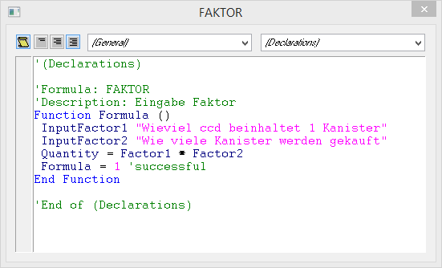
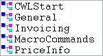
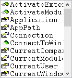
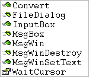
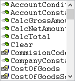
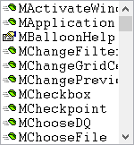
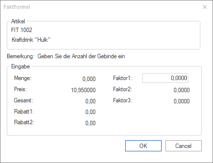
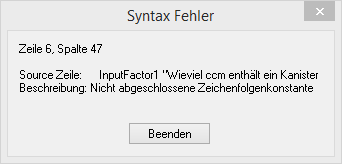

Die Formel selbst wird im Formelfenster bearbeitet. Grundsätzlich gibt es Einiges zu beachten:
Beschreibungstexte
Texte, die grün dargestellt werden, und die mit einem Hochkomma (') beginnen, sind Beschreibungstexte und haben keinen Einfluss auf die Funktion der Formel.
Beispiel
'(Declarations)
'Formel: 5
'Beschreibung: Verkauf Kanister
Beginn und Ende
Der Ablauf der Formel wird zwischen den beiden Einträgen "Function Formel ()" und "End Function" definiert. Alles was nicht innerhalb dieser beiden Einträge definiert ist, wird bei der Formelabarbeitung nicht berücksichtigt.

Funktionen
Durch Funktionen werden vordefinierte Programmabläufe abgerufen, die z.B. eine Variable füllen oder dergleichen. Funktionen werden auf der einen Seite von der VB-Script-Engine, auf der anderen Seite von der WinLine zur Verfügung gestellt.
Funktionen, die von VB-Script stammen, werden in der Formel blau dargestellt.
Um eine Liste aller Funktionen der WinLine im Formelfenster angezeigt zu bekommen, muss nur ein "." (Punkt) eingetragen werden. Dadurch wird das folgende Feld angezeigt:

Um die Übersicht über die jeweiligen Funktionen zu erhalten, wählen Sie eines der beiden Objekte mit dem Cursor und ENTER an und geben nochmals einen "." (Punkt) als Zeichen ein. Dann erhalten Sie folgende Auswahlansichten:
ü CWLStart
"CWLStart" beinhaltet
alle Befehle, die generell für das Objektmodell der WinLine vorhanden sind,
wobei diese für die FAKT-Formeln eher nicht relevant sind.

ü General
"General" beinhaltet
einige VB-Standardfunktionen, die auch in FAKT-Formeln Anwendung finden
können.

ü Invoicing
"Invoicing"
beinhaltet sämtliche Befehle, die von der CWL speziell für die Fakturierung zur
Verfügung gestellt werden.

ü MacroCommands
"MacroCommands"
bietet die Auswahl allgemeiner Kommandos, wie z.B. ein Macro für eine bestimmte
Zeitdauer anzuhalten, auf ein anderes Macro weiterzuschalten, einen bestimmten
Wert in ein Feld zu schreiben, den Focus zu setzen, Werte aus der Zwischenablage
zu übernehmen, etc..

ü PriceInfo
"PriceInfo"
beinhaltet einige Sonderfunktionen für die FAKT-Formeln.
Wenn man sich durch Drücken der Pfeil-nach-Unten-Taste durch die einzelnen Einträge der Listbox bewegt, wird die Verwendung der aktuellen Funktion in einem eigenen Fenster…
… angezeigt. Dadurch lässt sich erkennen, ob man die Funktion mit Parametern aufrufen muss oder nicht und welcher Typ erwartet wird.
Wenn vor dem Eintrag in der Listbox das Symbol  angezeigt wird, handelt es sich um
eine Funktion.
angezeigt wird, handelt es sich um
eine Funktion.
Beispiel für eine Funktion
InputFactor1: Diese Funktion kümmert sich darum, dass bei der Formelabarbeitung ein Feld geöffnet wird, in dem ein Wert - z.B. die Füllmenge eines Kanisters, der verkauft werden soll - vom Anwender eingegeben werden kann.
Als Ergebnis davon wird die Variable "Factor1" (das ist z.B. eine von 3 frei definierbaren Speichervariablen im Belegmittelteil) gefüllt.
Wenn vor dem Eintrag in der Listbox das Symbol angezeigt wird, handelt es sich um eine Variable.
Beispiel für eine Variable
Quantity: Das ist z.B. die Menge, die aus der Formeleingabe (z.B. Fassungsvermögen der Kanister mal Menge der verkauften Kanister) berechnet werden soll und letztendlich im Fakturenbeleg als für die Preisfindung verantwortliche Menge angezeigt werden soll.
Das Fenster
Bei den meisten Formeln ist es notwendig, dass zur Berechnung einer Variable zuerst mehrere Werte eingegeben werden, aus denen sich dann ein Ergebnis (eine andere Variable) errechnen soll (z.B. Eingabe von Kanisterinhalt und Anzahl der verkauften Kanister à Ergibt die zu fakturierende Menge.

Die Eingabe dieser Werte erfolgt in dem eigens dafür vorgesehenen Fenster "Formel". Damit das Fenster erscheint, muss in der Formel zumindest eine Funktion "Eingabe(Variable)" (Variable steht für z.B. Quantity, Factor1, Discount1, etc.) vorhanden sein.
Schließen des Formelfensters
Das Formelfenster wird durch Drücken der Tastenkombination ALT + F4 geschlossen.
Achtung
In jedem anderen Fenster wird durch Drücken der Tastenkombination ALT + F4 das komplette Programm geschlossen.
Mit dem Schließen des Fensters wird für die Formel gleich ein Syntax-Check durchgeführt. Sollte die Formel einen syntaktischen Fehler aufweisen, wird dieser in einem eigenen Fenster angezeigt, und die Formel kann so lange nicht gespeichert werden, bis der Fehler behoben wurde.
Beispiel für einen syntaktischen Fehler:

In diesem Fall wurde vergessen, das Hochkomma am Ende der Bemerkung zu setzen und die Description damit abzuschließen.
Wurde eine Formel neu erstellt, wird die Formel mit dem Schließen des Fensters gespeichert.
Wurden Änderungen in der Formel vorgenommen, so fragt das Programm beim Schließen des Fensters, ob die durchgeführten Änderungen gespeichert werden sollen oder nicht.
Hinweis
Nähere Beschreibung siehe Kapitel Formelfunktionen der WinLine FAKT.